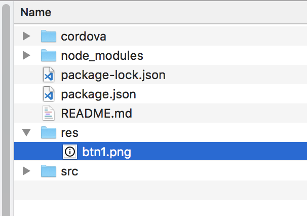
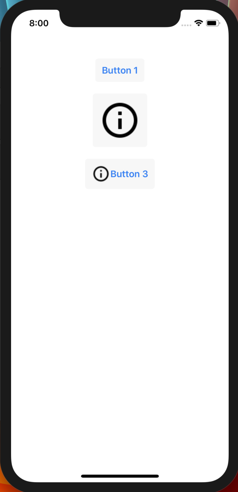
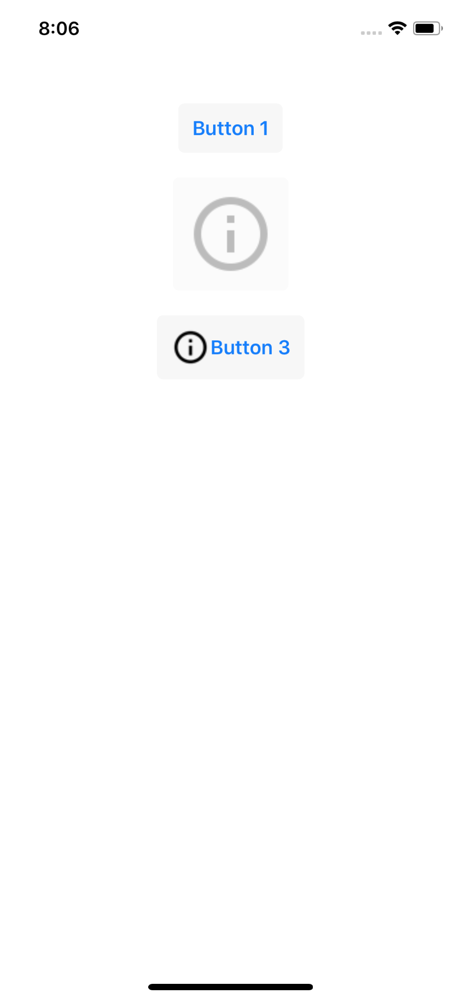

Membuat Button Pada Aplikasi Mobile dengan Tabris JS
Button atau tombol dapat dengan mudah dibuat pada Tabris JS.
Untuk membuat button, kita gunakan class Button bawaan Tabris JS. Kita perlu mendeklarasikan class Button ini dengan const {Button} = require('tabris');, kemudian setelah class tersedia, button dapat dibuat dengan let button1 = new Button({});
Berikut adalah beberapa property class Button yang paling sering digunakan:
aligmentuntuk mengatur perataan teks, dapat berisi'left','center'dan'right'. Jika tidak diisi, defaultnya adalah'center'imageuntuk menampilkan icon pada Button. Nilai property ini dapat berupa url langsung atau objek. Nanti kita lihat pada contoh di bawah.textuntuk menampilkan teks, isinya harus berupa string.textColoruntuk menentukan warna text. Nilainya harus string yang sesuai dengan spesifikasi CSS colors
Contoh nilai warna yang dapat diterapkan pada property textColor pada Button adalah:
textColor : "#f00"
textColor : "#ff0000"
textColor : "#ff000080" // 50% opacity red
textColor : "#ff06" // 40% opacity yellow
textColor : "rgb(255, 0, 0)"
textColor : "rgba(255, 0, 0, 0.8)"
textColor : "red"
textColor : "initial"
Karena Button adalah class turunan dari Widget, Button mewarisi banyak property, event dan method dari class Widget, antara lain: width, height, left, top, right, bottom, centerY, center, opacity, cornerRadius, layoutData, visible, enabled, font, id, class, background dan backgroundColor.
Setelah instance Buttin dibuat, panggil method .appendTo(parentObject) untuk menampilkannya ke parentObject. parentObject dapat berupa Page, Widget lainnya, atau side bar (SideMenu) dan bisa juga langsung ke tabris.ui.contentView yang merupakan canvas utama aplikasi.
Mari kita lihat beberapa contoh Button:
Buat projek baru, kemudian kosongkan isi file app.js deklarasikan class Button, ui pada file tersebut:
const {Button, ui} = require('tabris');
Di bawahnya, tambahkan deklarasi tiga buah button. Button pertama akan berisi teks, button kedua berisi image dan yang terakhir berisi teks dan image.
let btn1 = new Button({
centerX: 0, top: 40,
text: 'Button 1'
}).appendTo(ui.contentView);
let btn2 = new Button({
centerX: 0, top: [btn1, 20],
image: './res/btn1.png'
}).appendTo(ui.contentView);
let btn3 = new Button({
centerX: 0, top: [btn2, 20],
image: {src: './res/btn1.png', width: 32, height: 32},
text: 'Button 3'
}).appendTo(ui.contentView);
Perhatikan btn2, di mana property image menunjuk file btn1.png pada folder res, di manakah lokasi file ini pada directory projek? Tepat di dalam folder projek. Anda harus membuat manual folder res ini dan menambahkan file-file yang dibutuhkan di dalamnya. Lihat struktur directory berikut:

Perhatikan juga baha penyebutan nama projek harus menyebutkan directory utama projek, sehingga penulisannya adalah ./res/btn1.png bukannya res/btn1.png. Selanjutnya perlu diketahui bahwa ukuran button btn2 akan menyesuaikan dengan ukuran image btn1.png sehingga Anda perlu menggunakan file image yang ukurannya sesuai agar tidak merusak tampilan aplikasi nantinya.
Lanjut ke button btn3, di situ properti image tidak diisi dengan string nama file sebagaimana btn2, tapi menggunakan object:
{
src: './res/btn1.png',
width: 32,
height: 32
}
Tujuannya adalah fleksibilitas. Jika pada btn2 image ditampilkan dengan ukuran apa adanya sehingga ukuran button ikut menyesuaikan, pada btn3 kita dapat menentukan ukuran width dan height dari image yang ditampilkan, sehingga meskipun image aslinya berukuran besar atau lebih kecil, tetap akan ditampilkan dengan ukuran 32 x 32 piksel.
Untuk melihat tampilan ketiga button ini, jalankan projek dengan tabris run ios|android

Event Handler
Event utama pada button adalah onSelect, yaitu event yang terjadi ketika user melakukan tap pada button tersebut. Kita akan membuat satu event saja untuk button btn1 sebagai contoh. Anda dapat membuat sendiri event handler untuk button lainnya jika Anda suka.
Tambahkan kode berikut ke app.js:
btn1.on('select', function(){ btn2.enabled = false; });
Kode di atas akan men-disable button btn2 jika button btn1 di-tap user.

Selanjutnya dapat Anda kreasikan sendiri. Semoga bermanfaat.
Subscribe to Buyut's Log
Get the latest posts delivered right to your inbox